Commencer l’aventure >
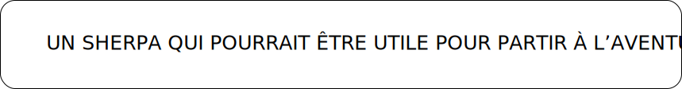
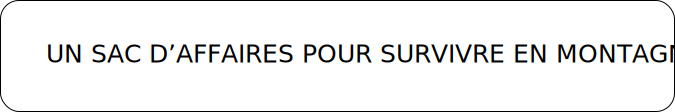
partir en expédition >
prendre de l’altitude >
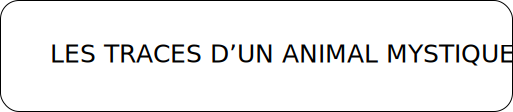
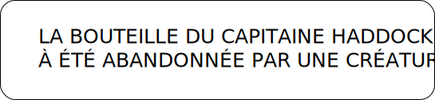
suivre les traces >
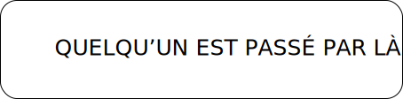
observer l’environnement >
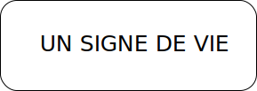
grimper la montagne >
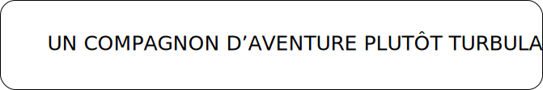
rencontre innatendue >
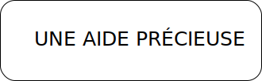
découvrir le yeti >
Entrer dans sa caverne >
qu’est-ce que tintin a bien pu découvrir? >
Commander la bande dessinée


 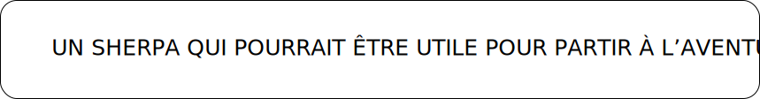
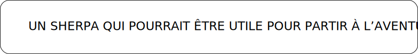  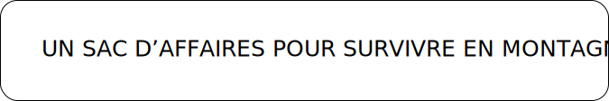
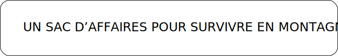 

 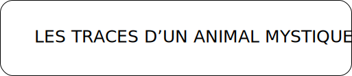
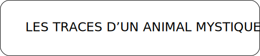  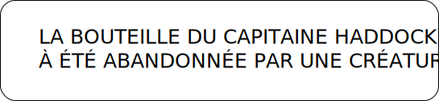
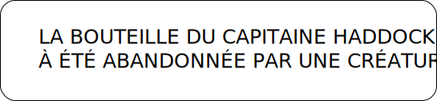 
 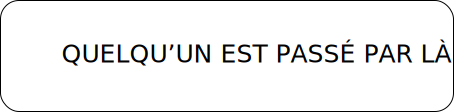
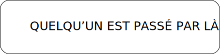 

 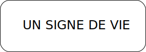
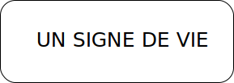 
 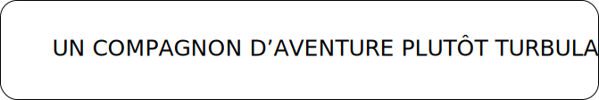
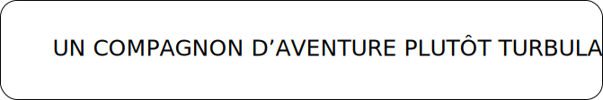 
 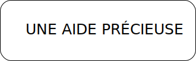
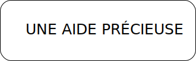 

 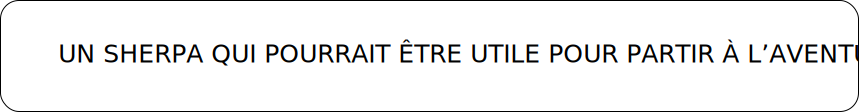 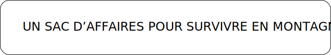 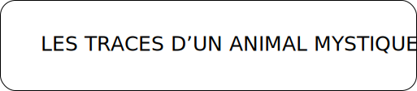 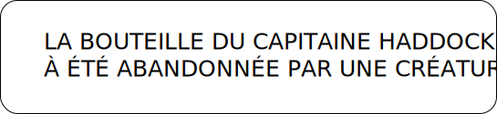 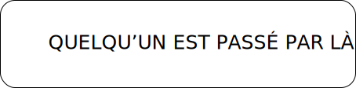 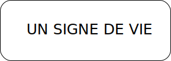 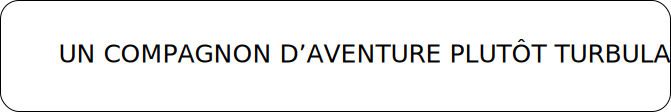 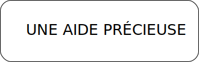
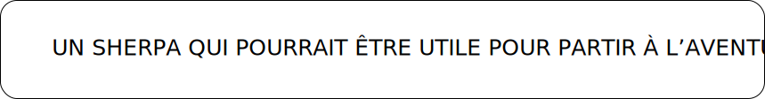 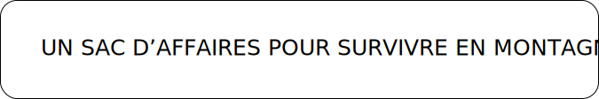 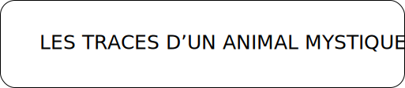 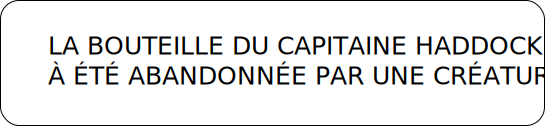 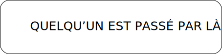 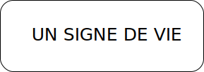 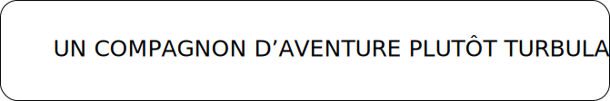 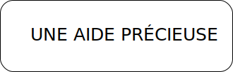